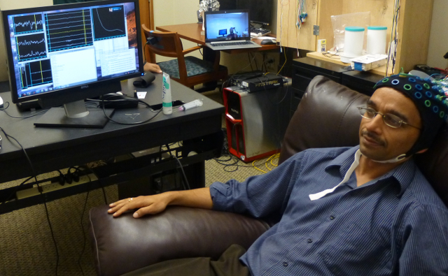
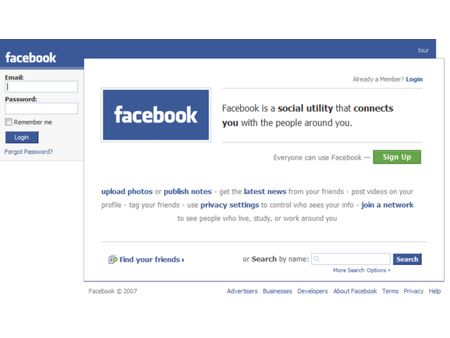
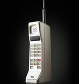

COMMUNICATION
Communication is an activity in exchanging information and meaning across space and time which use various technical or natural mean. It requires sender, message, medium and receiver to be able to complete this process.
Three steps in communication:
Thought:
Information exist in the mind of the sender may consist of concept, idea, information or feeling.
Encoding:
A message is sent to a receiver in symbols such as art, language, body language and signals. This acts as the medium of communication.
Thought:
The receiver translates the message into a concept or information that a person can understand.

Networkbased Telepathy
Sci-Fi movies uses telephaty for communication for years, and we wonder what it would be like to use it. In early as 2011 Dr. Rajesh Rao conducts experiment of telepathic system that connects two peoples brain on a two player video game at the University of Washington. Just imagine how far the experiment progressed in our time.

Facebook
Monitor your friends and loved ones any where in the world using Facebook. Meet new friends, old friends, actors and actresses using your own computer.

Handheld Phone
Imagine the potential of the phone that we are using today and what it will be in the coming future. Can you imagine the time that having a hand-held phone is like having an I-Phone 6.
Morse Code Device
This simple device was one of the most important part of our history specially during world war. Sending coordinates for bombardment, coordinating rescue and airship navigation these are examples of what can this simple thing can do.